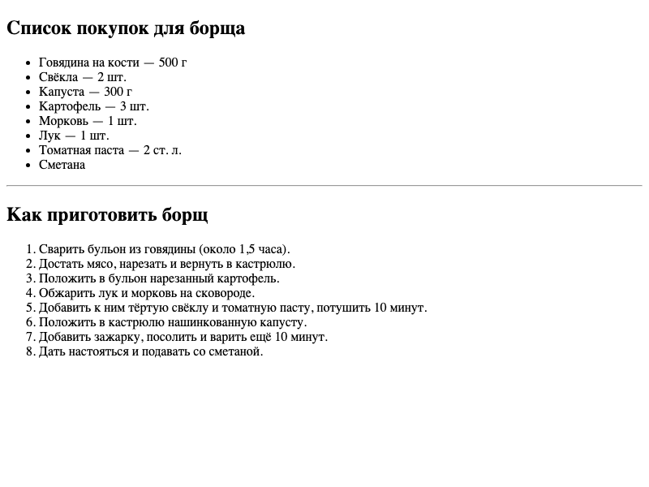
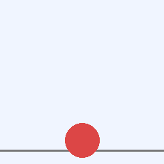

JPG — фото. Хорошо сжимает картинки с плавными переходами цвета, файл получается маленьким.

PNG — скриншот. Сжимает без потерь, поэтому текст на скриншоте остаётся чётким.
SVG — логотип. Это векторный формат, картинка не размывается при любом увеличении.

GIF — анимация. Умеет хранить несколько кадров, которые проигрываются по кругу.